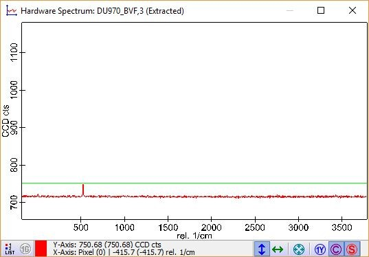
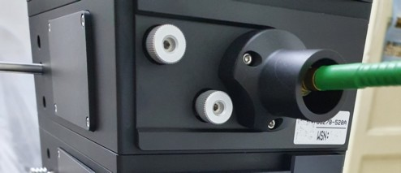
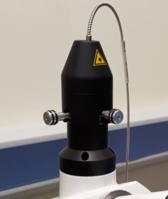
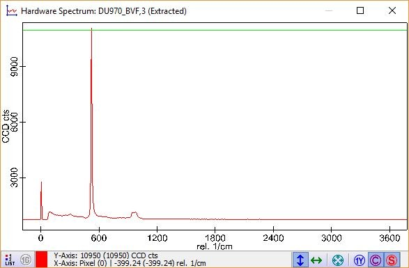
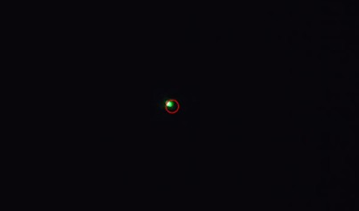
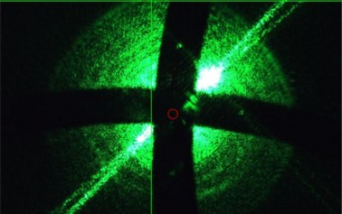

|
对准
|
输出光纤的入口充当 共聚焦针孔。为了优化拉曼光谱的强度和空间分辨率，光纤必须对准到激光光斑位置。如果系统有多个光谱仪，必须使用连接到用于测量的光谱仪的输出耦合器进行对准。
建议在 更换激光波长 后或观察到光谱强度低于预期时执行此步骤。
所需样品：
硅样品（最好使用系统附带的样品）
一般步骤
我们建议在硅样品上执行针孔的对准。
如果一切配置正确，应该至少有一个在520 cm-1 处的小峰（硅的一级峰）。这是进一步调节的基础。如果没有信号，请参考底部的 提示与故障排除。

自动输出耦合器
自动输出耦合器的对准可以使用软件完成。点击 输出调节 打开对话框。
对于Autobeam：
对于 非Autobeam：
手动输出耦合器
在每个输出耦合器的背面（显微镜塔的上部）或双目镜筒顶部，有两个用于x和y方向对准的螺丝（图2）。
未经在示波器中观察硅光谱，切勿转动任何螺丝！
如果转动旋钮，尽量避免对显微镜塔施加力，因为这将导致失焦和信号降低。转动螺丝后，移开手指再检查信号强度。
如果有多个输出耦合器，确保触碰正确的螺丝。如果转动螺丝时没有看到强度变化，请停止转动并再次检查是否转动了正确的螺丝。


尝试通过改变x和y方向的对准来增加光谱强度：

图3：光纤位置优化后的硅光谱
如果无法获得任何拉曼信号，检查以下几点：
如果排除了所有其他情况，光纤可能处于完全错误的位置。 请联系 WITec支持 获取 进一步建议。
非Autobeam自动输出耦合器配备有调节相机，显示激光束位置。
在 输出对准窗口 中点击 视频 激活它。您应该看到激光光斑和探针位置（红色圆圈）。降低激光功率直到刚好可以清晰地看到一个小光斑。
目标是将激光束位置恢复到红色圆圈的中心（与图4比较）。您可以像上述一样使用EasyLink控制器或软件按钮移动激光光斑。一旦激光束回到此圆圈内，应该可以在拉曼模式下至少获得一个小信号。这将作为进一步调节的基础，如上所述。

